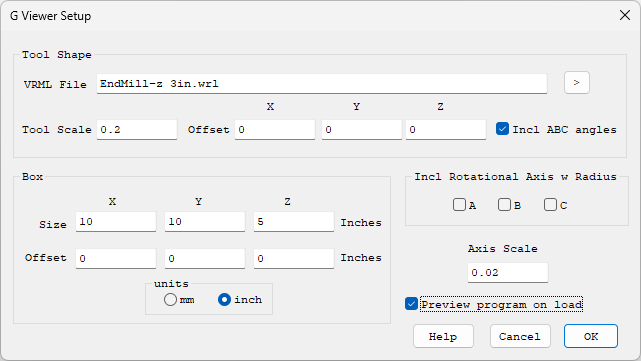
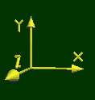
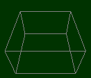
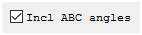
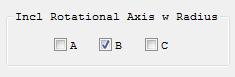
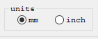

G Viewer Setup Screen

(Click on image to jump to related help)
The G Viewer Setup Screen sets the imaging parameters for the G Code Viewer Screen.
Besides the G code tools paths, the G Code Viewer Screen displays several objects, namely a Tool, a Box, and an Axis Symbol. The Tool Object and Axis Symbol are 3D VRML files that may be changed if desired. KMotionCNC comes with default files shown below.
Tool Shape

The default Tool Shape is located at: <Install Dir>\KMotion\Data\Tool.wrl, but maybe easily changed by entering or browsing to a new file. An excellent free program to create VRML files is available at http://www.artofillusion.org. The default Tool file is a 1 inch diameter sphere at the end of a 1 inch diameter cylinder which is 3 inches long. In the VRML file the origin (0,0,0) is at the center of the sphere. The Tool Scale and offsets allow the Tool Shape to be shifted and scaled as desired. As shown above an offset of (0,0,0.5) shifts the tool such that the origin is at the very tip of the tool. The scale of 0.10 then reduces the tool "size" from 1 inch to 0.10 inch. Specific Tool Shapes can be assigned to specific tools using the Tool Table.
Axis Scale

The Axis file name and location is hard coded as: <Install Dir>\KMotion\Data\Axis.wrl. The Axis shape is always drawn at the origin. It's size may be changed by changing the Axis Scale value. If a different Axis Shape is desired the Axis.wrl file must be overwritten with a new file. When Lathe Mode is selected a different Axis Style will be used based on the X Positive Front Setting as either <Install Dir>\KMotion\Data\AxisLathe.wrl or <Install Dir>\KMotion\Data\AxisLatheXFront.wrl.
Box

The Box serves two purposes. If enabled for display, it aids the 3D visualization and perspective of the tool paths. It is also expected to represent the working extents of the machine. When "zooming out" to one of the preset Top, Side, or Front Views, it is used to frame the view extents. Therefore the Box Size parameters should be set to the working extents of the machine. With an offset of 0,0,0 the origin will be located at the center of the Box. This is the preferred arrangement, however if required the Box may be displayed offset by entering Box Offset values other than zero
Include ABC angles

If checked, the A, B, and C angles of the tool are shown relative to the part. See video.
Include Rotational Axes

Includes the rotational effect of rotational axis if they represent a type of cylindrical dimension at a relatively fixed radius. The A axis rotates about the X Axis, the B axis rotates about the Y axis, and the C axis rotates about the Z axis. The example view below shows G Code plotted using B, Y, and Z Axes. The B motion is wrapped around the Y axis. The Z motion then moves away from the Y axis, and the Y motion is in the Y direction. See video.
Units

The parameters can be displayed as either inch or mm.
Preview program on load
If checked, whenever a G code file is loaded into the editor (or saved), KMotionCNC quietly simulates the entire file and draws its complete tool path in the G Code Viewer Screen, zoomed to fit. The path is drawn in preview colors: feeds in gray and rapids in muted red. The preview is only a drawing: it does not change any offsets, tool, modal state, current line, or stopped/resume information, and nothing is sent to the motion controller. It is made once the interpreter is idle, so loading a file while a program is running previews it after the run completes.
When a program is run over an up to date preview, the path is kept rather than cleared and re-plotted, and it is recolored as it is cut: feeds turn white and rapids light red. Runs that start at the beginning, continue from where the last run stopped (Single Step, Halt then Cycle Start, M0/M1), or start on a line of a program without loops or subroutines are tracked exactly, including inside loops and subroutines where the same line is drawn many times. Otherwise the run plots normally.
With Simulate checked, the simulation itself finishes almost instantly, so the part of the preview it executed is then played back as if it were being cut: at the programmed feed rates times the Feed Rate Override, with rapids at the maximum velocities. Accelerations are not included, so the playback is somewhat faster than the real machine. Feed Hold pauses the playback and the Cycle Start/Halt button stops it. Single Step plays back just the block that was executed.
The preview shows the programmed path. It is redrawn whenever the file changes, and a run started on a file that has changed since it was previewed plots normally. Unchecked (the default) KMotionCNC plots tool paths only as they are executed, as in previous versions.